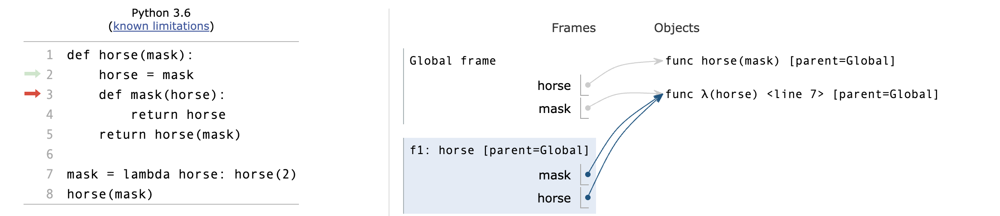
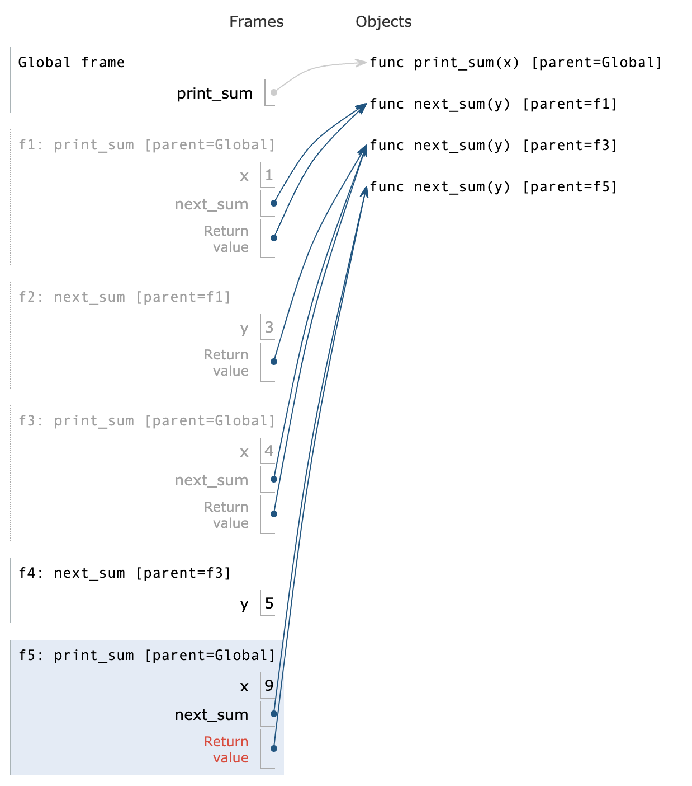

在 Python 中，s 和 s[:] 都表示对序列（如字符串、列表、元组等） s 的某种操作，但它们的行为有一些细微的区别：
总结¶
s是对原对象的引用。s[:]会创建一个新的对象，复制原对象的内容。
示例¶
字符串¶
s = "hello"
print(s) # 输出: hello
print(s[:]) # 输出: hello
print(s == s[:]) # 输出: True
print(s is s[:]) # 输出: False
s 和 s[:] 内容相同，但 s 和 s[:] 是不同的对象，is 比较时会返回 False。
列表¶
lst = [1, 2, 3]
print(lst) # 输出: [1, 2, 3]
print(lst[:]) # 输出: [1, 2, 3]
print(lst == lst[:]) # 输出: True
print(lst is lst[:]) # 输出: False
# 修改原列表，检查浅拷贝
<div markdown="1" style="margin-top: -30px; font-size: 0.75em; opacity: 0.7;">
:material-circle-edit-outline: 约 2239 个字 :fontawesome-solid-code: 280 行代码 :material-image-multiple-outline: 11 张图片 :material-clock-time-two-outline: 预计阅读时间 11 分钟
</div>
lst[0] = 100
print(lst) # 输出: [100, 2, 3]
print(lst[:]) # 输出: [1, 2, 3] (因为切片是浅拷贝)
- 在上面的例子中，
lst[:]创建了一个新的列表，它与原始列表lst内容相同，但它们是不同的对象，因此修改lst不会影响到lst[:]。
重要区别¶
s和s[:]在内容上可以相同，但s[:]总是会返回一个新的对象，而s只是对原对象的引用。
Week 1¶
Names,Assignment¶
-
在Python中，
Name（名称）是指向对象的引用。在Python的上下文中，几乎所有的东西都是对象，包括函数、变量、数据结构等。Name可以是一个变量名，也可以是一个函数名。当你创建一个变量或函数时，你实际上是在为一个对象创建了一个名称（或标识符），通过这个名称可以访问或调用该对象。 -
在Python中，
assignment（赋值）是将一个值绑定到一个名称（通常是一个变量名）的过程。赋值操作使用等号=来完成。当进行赋值时，等号右侧的表达式会被计算，然后其结果会被绑定到等号左侧的名称上。
f = max，那么f对应的就是max函数的内容，并不会随着max的改变而改变
Defining Functions¶
- 纯函数（Pure Functions） 是这样一种函数，它满足以下两个主要条件：
- 相同的输入总是产生相同的输出。纯函数不依赖于并且也不修改定义在函数外部的状态。这意味着，给定相同的参数，无论调用多少次，纯函数都会返回相同的结果。
- 没有副作用。纯函数不会改变任何外部状态（例如，不修改全局变量，不写入数据库等），也不会有如打印到控制台、写文件这样的操作。
- 非纯函数（Non-Pure Functions） 是指不满足上述纯函数条件的函数。它们可能依赖于外部状态，或者在执行过程中改变外部状态（产生副作用）。
- 在Python中，
function signature（函数签名）指的是函数定义的一部分，它包括函数的名称、接收的参数（包括位置参数、关键字参数、可变位置参数、可变关键字参数等）以及有时候包括返回类型的注解。函数签名为调用者提供了函数如何被调用的信息。
- 在这个例子中，函数签名是
greet(name: str) -> str，它告诉我们：
- 函数的名称是greet。
- 它接受一个名为name的参数，该参数被注解为str类型。
- 它返回一个str类型的值。
-
d=10并不是为d赋值，而是当没有传入d的值时，会为d默认赋值为10
Print and None¶
-
在Python中，
None是一个特殊的常量，用于表示空值或者无值的状态。它是NoneType类型的唯一值。None经常用于函数返回值，表示函数没有返回任何具体的值。同时，它也常用于变量初始化，以及表示某些对象或变量尚未被赋予具体的值。 -
在Python中，
print是一个内置函数，用于将信息输出到标准输出（通常是屏幕）。它可以接受多个参数，将它们转换为字符串（如果它们不已经是字符串的话），然后输出这些字符串，参数之间默认用空格分隔，最后默认输出一个换行符。同时print函数没有返回值，在调用的时候就会返回None
Boolean Contexts¶
- False Values in Python:
- False
- 0
- ''
- None
- True Values in Python: Anything else
Short Circuiting¶
and操作符，Python会先评估左侧表达式，若为False则结果为左侧表达式的值；若为True,则结果为右侧表达式的值or操作符，Python会先评估左侧表达式，若为False则结果为右侧表达式的值；若为True,则结果为左侧表达式的值
Week 2¶
Locally Defined Functions¶
def make_adder(n):
def adder(k):
return k+n
return adder
"""
>>> add_three = make_adder(3)
>>> add_three(4)
7
"""
make_adder(n)定义了一个函数，这个函数内部定义了另一个函数adder(k)。adder函数将其参数k与外部函数的参数n相加，并返回结果。
- 当make_adder被调用时，比如make_adder(3)，它返回一个adder函数，这个adder函数将会把它的参数和3相加。
Functions that accept arbitrary arguments¶
- 我们想编写一个接受任意数量的参数的函数，然后使用这些参数调用另一个函数
- 运用 *args 以接受任意数量的参数
>>> def printed(f): ... def print_and_return(*args): ... result = f(*args) ... print('Result:', result) ... return result ... return print_and_return >>> printed_pow = printed(pow) >>> printed_pow(2, 8) # *args represents the arguments (2, 8) Result: 256 256 >>> printed_abs = printed(abs) >>> printed_abs(-10) # *args represents one argument (-10) Result: 10 10def make_averaged(original_function, samples_count=1000): """Return a function that returns the average value of ORIGINAL_FUNCTION called SAMPLES_COUNT times. To implement this function, you will have to use *args syntax. >>> dice = make_test_dice(4, 2, 5, 1) >>> averaged_dice = make_averaged(roll_dice, 40) >>> averaged_dice(1, dice) # The avg of 10 4's, 10 2's, 10 5's, and 10 1's 3.0 """ def averaged(*args): total = 0 for i in range (samples_count): total += original_function(*args) return total/samples_count return averaged
High Order Function¶
高阶函数（High Order Function）是指至少满足下列一个条件的函数：
- 接受一个或多个函数作为参数。
- 返回另一个函数作为结果。
- 高阶函数在函数式编程中非常重要，它们允许函数操作函数，提供了极大的灵活性和表达力。例如，Python中的map和filter都是高阶函数，因为它们接受一个函数作为参数。另一个例子是装饰器（Decorator），它接受一个函数作为输入并返回一个增强版的函数。
- 高阶函数，注意是在调用函数还是在赋值
def cake(): print('beets') def pie: print('sweets') return 'cake' return pie """ >>> chocolate = cake() beets >>> chocolate <function pie at ...> >>> chocolate() sweets 'cake' >>> more_chocolate, more_cake = chocolate(),cake sweets >>> more_chocolate 'cake' """ def snake(x,y): if cake == more_cake: return chocolate else: return x+y """ >>> snake(10,20) <function pie at ...> >>> snake(10,20)() sweets 'cake' >>> cake = 'cake' >>> snake(10,20) 30
Horse and Mask¶
- 形参、frame的绕中绕，搞清每一个frame和它的parent
- 在
global frame中我们定义了两个函数，一个是horse，一个是由lambda表达式构成的mask - 然后调用
horse(mask)，这里是在global下调用的，所以horse和mask就指向上文的两者 - 然后进入
f1: horse,[parent = Global]，开始执行body，执行到horse = mask，呈现下图的关系：  - 在定义了内部的
mask函数后，返回horse(mask)，这时候两者所指对象有所变化： - 于是进入
f2: λ <line 7> [parent = Global]，在这个函数里horse其实指向之前定义的内部函数[parent = f1]
- 然后因为在
f2里面返回的是horse(2)，所以进入f3: mask [parent = f1]，因而return 2
- 又回到
f2返回2，又回到f1返回2

{kind=link}
{kind=link}
Lambda Expression¶
- Lambda 表达式，也称为匿名函数，是一种在 Python 中快速定义单行的最小函数的方式。Lambda 函数可以接受任意数量的参数，但只能有一个表达式。这个表达式的计算结果会被这个函数自动返回。
- 结合高阶函数和lambda表达式，我们可以写出一些功能强大的函数，比如inverse
def search(f): x = 0 while True: if f(x): return x x += 1 # 这个函数用来寻找满足条件的x def inverse(f): return lambda y:search(lambda x:f(x) == y) # 这个高阶函数返回一个单参函数search # 其中向search传入了 f(x) == y 的判断函数 """ >>> square = lambda x: x*x >>> sqrt = inverse(square) >>> sqrt(16) 4 """ # 当然这个版本只适用于普通的整数，更精确的平方根求法可以用牛顿法或者平方根倒数算法
Currying¶
- Currying 是一种在函数式编程中常见的技术，它指的是将一个多参数的函数转换成一系列使用一个参数的，Higher-Order的函数的过程。
def curry2(f):
def g(x):
def h(y):
return f(x,y)
return h
return g
"""
>>> from operator import add
>>> m = curry2(add)
>>> add_three = m(3)
>>> add_three(2)
5
>>> curry2 = lambda f: lambda: x: lambda y: f(x,y)
...
...
"""
Decorators¶
- 装饰器（Decorator）是 Python 中一个非常强大的功能，允许你在不修改原始函数或方法定义的情况下，给它们添加额外的功能。装饰器本质上是一个函数，它接受一个函数作为参数并返回一个新的函数。使用装饰器可以实现很多功能，比如访问控制、日志记录、测量执行时间等。
- 装饰器的基本语法是在函数定义前使用
@符号加上装饰器的名称。 - 但对于lambda表达式就不能直接使用
@，而是调用Decorator函数
def trace1 (fn): """Returns a version of fn that first prints before it is called fn - a function of 1 argument """ def trace(x): print('Calling',fn,'on argument',x) return fn(x) return trace @trace1 def square(x): return x*x @trace1 def a_function: return 1 """ >>> square(4) Calling <function square at ...> on argument 4 16 """
Recursion¶
-
For Instance
def print_sum(x): print(x) def next_sum(y): return print_sum(x+y) return next_sum print_sum(1)(3)(5) -
递归函数（Recursion Functions） 是在其定义中调用自身的函数。
- 基本情况（Base Case）：这是递归停止的条件，没有它，递归将无限循环下去。
- 递归步骤（Recursive Step）：在这一步中，函数调用自身，通常是用一组不同的参数。
{kind=link}
Mutual Recursion¶
- 互递归（Mutual Recursion） 是指两个或多个函数相互调用对方以实现递归的情况。
Luhn Algorithm¶
- 从右边第二个数字开始，每隔一个数字乘以2。
- 如果乘以2的结果是两位数，则将这两位数相加得到一个单一的数字(e.g. 10 -> 1 + 0 = 1)
- 然后加和所有数字，如果这个总和可以被10整除则是有效的

Tree Recursion¶
- 树递归（Tree Recursion） 是一种特殊类型的递归模式，其中一个函数在其执行过程中不止一次地调用自身。每次函数调用自身时，都会创建一个新的分支，在逻辑上形成了一棵树。

例如：Cascade函数
def cascade(n):
if n < 10:
print(n)
else :
print(n)
cascade(n // 10)
print(n)
"""
>>> cascade(123)
123
12
1
12
123
"""
"""
1
12
123
1234
123
12
1
"""
# 对于形如这样的inverse_cascade，我们打算把函数拆分成三部分：grow，print，shrink
def inverse_cascade(n):
grow(n)
print(n)
shrink(n)
#然后引入f_then_g函数，来调整函数的前后调用顺序
def f_then_g(f,g,n):
if n:
f(n)
g(n)
#最后定义grow和shrink
grow = lambda n: f_then_g(grow, print, n // 10)
shrink = lambda n: f_then_g(print, shrink, n // 10)
{kind=link}